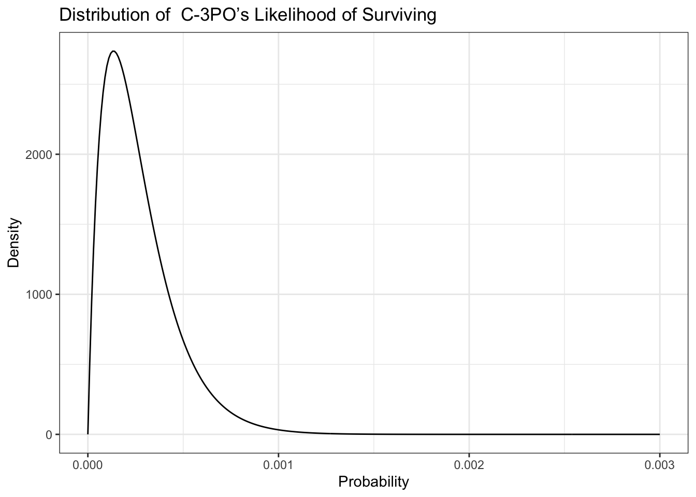
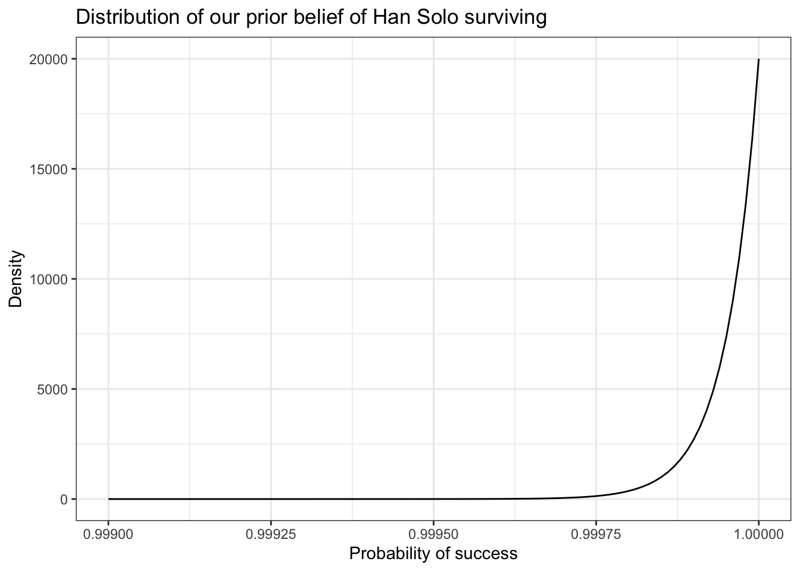
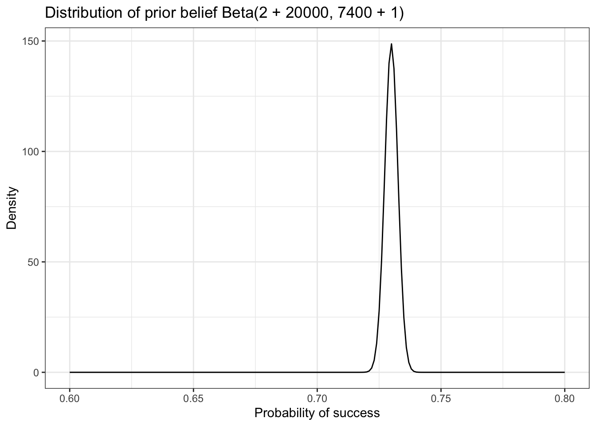

0.04256 with absolute error < 4.7e-169 Bayesian Priors and Working with Probability Distributions
9.1 C-3PO’s Asteroid Field Doubts
As an example, we’ll use one of the most memorable errors in statistical analysis from a scene in Star Wars: The Empire Strikes Back. When Han Solo, attempting to evade enemy fighters, flies the Millennium Falcon into an asteroid field, the ever-knowledgeable C-3PO informs Han that probability isn’t on his side. C-3PO says, “Sir, the possibility of successfully navigating an asteroid field is approximately 3,720 to 1!” (78)
9.2 Determining C-3PO’s Beliefs
Theorem 9.1 (Parameterization of the Beta Distribution)
Recall that the beta distribution is parameterized with an \(\alpha\) (number of observed successes) and a \(\beta\) (the number of observed failures) (79):
\[ P(\text{Rate Of Success} | \text{Successes and Failures}) = Beta(\alpha,\beta) \tag{9.1}\]
Let’s say that C-3PO has records of 2 people surviving the asteroid field, and 7,440 people ending their trip in a glorious explosion! (79)

9.3 Accounting for Han’s Badassery
We have a prior belief that Han will make it through the asteroid field, because Han has survived every improbable situation so far. (80)
We’ll start with some sort of upper bound on Han’s badassery. If we believed Han absolutely could not die, the movie would become predictable and boring. At the other end, our belief that Han will succeed is stronger than C-3PO’s belief that he won’t, so let’s say that our belief that Han will survive is 20,000 to 1. (81)

9.4 Creating Suspense with a Posterior
By combining the different beliefs, C-3PO’s belief about the small changes of success (likelihood, (GLOSSARY)) and our belief about the skills of Han Solo (prior probability, prior) GLOSSAY), we create the posterior probability (GLOSSARY).
Theorem 9.2 (Proportional Form of Bayes’ theorem) \[Posterior \propto Likelihood \times Prior \tag{9.2}\] The sign \(\propto\) is the proportional operator (GLOSSARY) and stands for “is proportional to”.
Remember, using this proportional form of Bayes’ theorem means that our posterior distribution doesn’t necessarily sum to 1. But we’re lucky because there’s an easy way to combine beta distributions that will give us a normalized posterior when all we have is the likelihood and the prior. (82)
Theorem 9.3 (Normalized Posterior with just Likelihood and Beta) \[ Beta(\alpha_{posterior},\beta_{posterior}) = Beta(\alpha_{likelihood} + \alpha_{prior}, \beta_{likelihood} + \beta_{prior}) \tag{9.3}\]
With our example:
\[ \begin{align*} Beta(?,?) = Beta(2 + 20000, 7440 + 1) \\ Beta(20002,7441) = Beta(2 + 20000, 7440 + 1) \end{align*} \]

Warning
This is a wrong figure on p.88 as the prior belief should be Beta(2 + 20000, 7440 + 1) instead of Beta(2 + 20000, 7440 + 1). See also page 2 the Errata file. But I did not change it here and in my Figure 9.6 as it is not so important for the general argumentation.
The combined belief of C-3PO for the very low chances to live through the asteroid field and our prior belief of the exceptional skills of Han Solo accounts to a pretty good 73% chance of survival.
9.5 Wrapping Up
The chapter provides two learnings:
- The prior provides important background information that is essential to get realistic expectations for the probability distribution of the posterior.
- Instead of using a single probability (some central measure, like mean, median etc.) you can express express a range of possible beliefs. The best way is to use the whole probability distributions, rather than a summary like a single probability or range of the distribution.
9.6 Exercises
Try answering the following questions to see if you understand how to combine prior probability and likelihood distributions to come up with an accurate posterior distribution; solutions to the questions can be found at https://nostarch.com/learnbayes/.
9.6.1 Exercise 9-1
A friend finds a coin on the ground, flips it, and gets six heads in a row and then one tails. Give the beta distribution that describes this. Use integration to determine the probability that the true rate of flipping heads is between 0.4 and 0.6, reflecting that the coin is reasonably fair.
There is only a 4% probability that the coin is fair, at least based only on the likelihood probability.
9.6.2 Exercise 9-2
Come up with a prior probability that the coin is fair. Use a beta distribution such that there is at least a 95 percent chance that the true rate of flipping heads is between 0.4 and 0.6.
Note
I could note solve this problem, because I did not come up with the idea that ‘any \(\alpha\) prior = \(\beta\) prior will give us a “fair” prior; and the larger those values are, the stronger that prior is.’ (240)
So the solution is:
integrate(function(p) dbeta(p, 6 + added_prior, 1 + added_prior), 0.4, 0.6).
To get at least 95% change that the coin is fair we need to determine the value of the added prior. Instead of trial and error manually I will do it with a little R program.
54: 0.950427480766883The nearest value of the prior to get at least a 95 percent chance that the true rate of flipping heads is between 0.4 and 0.6 is 54. This is slightly lower than the trial & error solution in the Appendix C of the book.
9.6.3 Exercise 9-3
Now see how many more heads (with no more tails) it would take to convince you that there is a reasonable chance that the coin is not fair. In this case, let’s say that this means that our belief in the rate of the coin being between 0.4 and 0.6 drops below 0.5.
With our added prior value we have a beta distribution of Beta(6 + 54, 1 + 54).
23: 0.481467889312114To drop our expectation under 50% we need 23 more heads in row.
This shows that even a strong prior belief can be overcome with more data. (241)
9.7 Experiments
9.7.1 Replicating Figure 9-1
Let’s say that C-3PO has records of 2 people surviving the asteroid field, and 7,440 people ending their trip in a glorious explosion! (79)

9.7.2 Replicating Figure 9-2
Our belief that Han will succeed is 20,000 to 1.
tibble::tibble(x = seq(from = 0.99900, to = 1, by = 0.00001),
y = dbeta(x, 20000, 1)) |>
ggplot2::ggplot(ggplot2::aes(x = x, y = y)) +
ggplot2::geom_line() +
ggplot2::theme_bw() +
ggplot2::labs(
title = "Distribution of our prior belief of Han Solo surviving",
x = "Probability of success",
y = "Density"
)

9.7.3 Replicating Figure 9-3
Combining the distributions of prior (\(Beta(2, 20000)\)) and likelihood (\(Beta(7400, 1)\)) generates the posterior distribution of \(Beta(20002, 7401)\).
tibble::tibble(x = seq(from = 0.6, to = 0.8, by = 0.001),
y = dbeta(x, 20002, 7401)) |>
ggplot2::ggplot(ggplot2::aes(x = x, y = y)) +
ggplot2::geom_line() +
ggplot2::theme_bw() +
ggplot2::labs(
title = "Distribution of prior belief Beta(2 + 20000, 7400 + 1)",
x = "Probability of success",
y = "Density"
)
